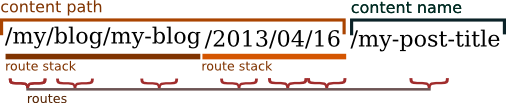

The RoutingAutoBundle allows you to define automatically created routes for documents. This implies a separation of the Route and Content documents. If your needs are simple this bundle may not be for you and you should have a look at SimpleCmsBundle.
For the sake of example, we will imagine a blog application that has two routeable contents, the blog itself, and the posts for the blog. We will call these documents Blog and Post, and we will class them as content documents.
Nota
In our example we add an auto route for the blog, but in reality, as a blog is something you create rarely, you will probably want to create routes for your blog manually, but its up to you.
If we create a new Blog with the title “My New Blog” the bundle could automatically create the route /blogs/my-new-blog. For each new Post it could create a route such as /blogs/my-new-blog/my-posts-title. This URL resolves to a special type of route that we will call the auto route.
By default, when we update a content document that has an auto route the corresponding auto route will also be updated, when deleting a content document the corresponding auto route will also be deleted.
If required, the bundle can also be configured to do extra stuff, like, for example, leaving a RedirectRoute when the location of a content document changes or automatically displaying an index page when an unconfigured intermediate path is accessed (for example, listing all the children under /blogs instead of returning a 404).
Of course, our fictional blog application could use a single route with a pattern /blogs/my-new-blog/{slug} which could be handled by a controller. Why not just do this?
The diagram below shows a fictional URL for a blog post. The first 6 elements of the URL are what we will call the content path. The last element we will call the content name.
The content path is further broken down into route stacks and routes. A route stack is a group of routes and routes are simply documents in the PHPCR tree.
Nota
Although routes in this case can be of any document class, only objects which extend the Symfony\Component\Routing\Route object will be considered when matching a URL.
The default behavior is to use Generic documents when generating a content path, and these documents will result in a 404 when accessed directly.
Internally each route stack is built up by a builder unit. Builder units contain one path provider class and two actions classes one action to take if the provided path exists in the PHPCR tree, the other if it does not. The goal of each builder unit is to generate a path and then provide a route object for each element in that path.
The configuration for the example above could be as follows:
symfony_cmf_routing_auto:
auto_route_mapping:
My\Namespace\Bundle\BlogBundle\Document\Post:
content_path:
# corresponds first route stack in diagram: my, blog, my-blog
blog_path:
provider:
name: content_object
method: getBlog
exists_action:
strategy: use
not_exists_action:
strategy: throw_exception
# corresponds to second route stack: 2013,04,06
date:
provider:
name: content_datetime
method: getPublishedDate
exists_action:
strategy: use
not_exists_action:
strategy: create
# corresponds to the content name: My Post Title
content_name:
provider:
name: content_method
method: getTitle
exists_action:
strategy: auto_increment
pattern: -%d
not_exists_action:
strategy: create
The Post document would then need to implement the methods named above as follows:
<?php
class Post
{
public function getBlog()
{
// return the blog object associated with the post
return $this->blog;
}
public function getPublishedDate()
{
return new \DateTime('2013/04/06');
}
public function getTitle()
{
return "My post title";
}
}
Path providers specify a target path which is used by the subsequent path actions to provide the actual route documents.
Base providers must be the first configured as the first builder in the content path chain. This is because the paths that they provide correspond directly to an existing path, i.e. they have an absolute reference.
This is the most basic path provider and allows you to specify an exact (fixed) path.
path_provider:
name: specified
path: this/is/a/path
Options:
- path - required The path to provide.
Nota
We never specifiy absolute paths in the auto route system. If the builder unit is the first content path chain it is understood that it is the base of an absolute path.
The content object provider will try and provide a path from an object implementing RouteAwareInterface provided by a designated method on the content document. For example, if you have a Post class, which has a getBlog method, using this provider you can tell the Post auto route to use the route of the blog as a base.
So basically, if your blog content has a path of /this/is/my/blog you can use this path as the base of your Post auto-route.
Ejemplo:
provider:
name: content_object
method: getBlog
Nota
At the time of writing translated objects are not supported. This isn’t hard to do, but well, I just havn’t done it yet.
Options:
- method: required Method used to return the document whose route path we wish to use.
The content_method provider allows the content object (e.g. a blog Post) to specify a path using one of its methods. This is quite a powerful method as it allows the content document to do whatever it can to produce the route, the disadvantage is that your content document will have extra code in it.
Example 1:
path_provider:
name: content_method
method: getTitle
This example will use the existing method “getTitle” of the Post document to retrieve the title. By default all strings are slugified.
The method can return the path either as a single string or an array of path elements as shown in the following example:
<?php
class Post
{
public function getTitle()
{
return "This is a post";
}
public function getPathElements()
{
return array('this', 'is', 'a', 'path');
}
}
Options:
- method: required Method used to return the route name / path / path elements.
- slugify: If we should use the slugifier, default is true.
The content_datettime provider will provide a path from a DateTime object provided by a designated method on the content document.
Example 1:
provider:
name: content_datetime
method: getDate
Example 2:
provider:
name: content_datetime
method: getDate
date_format: Y/m/d
Nota
This method extends content_method and inherits the slugify feature. Internally we return a string using the DateTime->format() method. This means that you can specify your date in anyway you like and it will be automatically slugified, also, by adding path separators in the date_format you are effectively creating routes for each date component as slugify applies to each element of the path.
Options:
- method: required Method used to return the route name / path / path elements.
- slugify: If we should use the slugifier, default is true.
- date_format: Any date format accepted by the DateTime class, default Y-m-d.
These are the default actions available to take if the path provided by a path_provider already exists and so creating a new path would create a conflict.
The auto_increment action will add a numerical suffix to the path, for example my/path would first become my/path-1 and if that path also exists it will try my/path-2, my/path-3 and so on into infinity until it finds a path which doesn’t exist.
This action should typically be used in the content_name builder unit to resolve conflicts. Using it in the content_path builder chain would not make much sense (I can’t imagine any use cases at the moment).
Ejemplo:
exists_action:
name: auto_increment
Options:
- None.
The use action will simply take the existing path and use it. For example, in our post example the first builder unit must first determine the blogs path, /my/blog, if this path exists (and it should) then we will use it in the stack.
This action should typically be used in one of the content path builder units to specify that we should use the existing route, on the other hand, using this as the content name builder action should cause the old route to be overwritten.
Ejemplo:
exists_action:
name: use
Options:
- None.
These are the default actions available to take if the path provided by a path_provider does not exist.
The create action will create the path. currently all routes provided by the content path build units will be created as Generic documents, whilst the content name route will be created as an AutoRoute document.
not_exists_action:
name: create
Options:
- None.
This action will throw an exception if the route provided by the path provider does not exist. You should take this action if you are sure that the route should exist.
not_exists_action:
name: create
Options:
- None.
The goal of a PathProvider class is to add one or several path elements to the route stack. For example, the following provider will add the path “foo/bar” to the route stack:
<?php
use Symfony\Cmf\Bundle\RoutingAutoBundle\AutoRoute\PathProviderInterface;
use Symfony\Cmf\Bundle\RoutingAutoBundle\AutoRoute\RouteStack;
class FoobarProvider implements PathProviderInterface
{
public function providePath(RouteStack $routeStack)
{
$routeStack->addPathElements(array('foo', 'bar'));
}
}
To use the path provider you must register it in the DIC and add the symfony_cmf_routing_auto.provider tag and set the alias accordingly.
<service
id="my_cms.some_bundle.path_provider.foobar"
class="FoobarProvider"
scope="prototype"
>
<tag name="symfony_cmf_routing_auto.provider" alias="foobar"/>
</service>
my_cms.some_bundle.path_provider.foobar:
class: "FoobarProvider"
scope: prototype
tags:
- { name: symfony_cmf_routing_auto.provider, alias: "foobar"}
$definition = new Definition('FooBarProvider');
$definition->addTag('symfony_cmf_routing_auto.provider', array('alias' => 'foobar'));
$definition->setScope('prototype');
$container->setDefinition('my_cms.some_bundle.path_provider.foobar', $definition);
The foobar path provider is now available as foobar.
Nota
The that both path providers and path actions need to be defined with a scope of “prototype”. This ensures that each time the auto routing system requests the class a new one is given and we do not have any state problems.
In the auto routing system, a “path action” is an action to take if the path provided by the “path provider” exists or not.
You can add a path action by extending the PathActionInterface and registering your new class correctly in the DI configuration.
This is a very simple implementation from the bundle - it is used to throw an exception when a path already exists:
<?php
namespace Symfony\Cmf\Bundle\RoutingAutoBundle\AutoRoute\PathNotExists;
use Symfony\Cmf\Bundle\RoutingAutoBundle\AutoRoute\PathActionInterface;
use Symfony\Cmf\Bundle\RoutingAutoBundle\AutoRoute\Exception\CouldNotFindRouteException;
use Symfony\Cmf\Bundle\RoutingAutoBundle\AutoRoute\RouteStack;
class ThrowException implements PathActionInterface
{
public function init(array $options)
{
}
public function execute(RouteStack $routeStack)
{
throw new CouldNotFindRouteException('/'.$routeStack->getFullPath());
}
}
It is registered in the DI configuration as follows:
<service
id="my_cms.not_exists_action.throw_exception"
class="My\Cms\AutoRoute\PathNotExists\ThrowException"
scope="prototype"
>
<tag name="symfony_cmf_routing_auto.not_exists_action" alias="throw_exception"/>
</service>
symfony_cmf_routing_auto.not_exists_action.throw_exception
class: "My\Cms\AutoRoute\PathNotExists\ThrowException"
scope: prototype
tags:
- { name: symfony_cmf_routing_auto.provider, alias: "throw_exception"}
$definition = new Definition('My\Cms\AutoRoute\PathNotExists\ThrowException');
$definition->addTag('symfony_cmf_routing_auto.provider', array('alias' => 'throw_exception'));
$definition->setScope('prototype');
$container->setDefinition('my_cms.some_bundle.path_provider.throw_exception', $definition);
Note the following:
Scope: Must always be set to prototype;
Alias: The alias of the tag is the name by which you will reference this action in the auto routing schema.